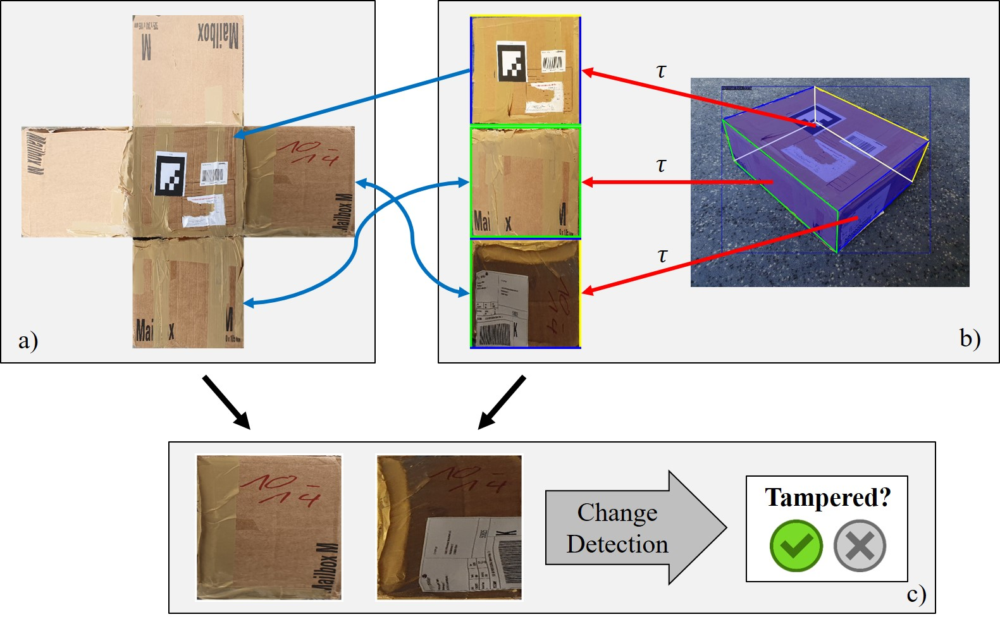

Abstract
Due to the steadily rising amount of valuable goods in supply chains, tampering detection for parcels is becoming increasingly important. In this work, we focus on the use-case last-mile delivery, where only a single RGB image is taken and compared against a reference from an existing database to detect potential appearance changes that indicate tampering.
We propose a tampering detection pipeline that utilizes keypoint detection to identify the eight corner points of a parcel. This permits applying a perspective transformation to create normalized fronto-parallel views for each visible parcel side surface. These viewpoint-invariant parcel side surface representations facilitate the identification of signs of tampering on parcels within the supply chain, since they reduce the problem to parcel side surface matching with pair-wise appearance change detection.
Experiments with multiple classical and deep learning-based change detection approaches are performed on our newly collected tampering detection dataset TAMPAR. We evaluate keypoint and change detection separately, as well as in a unified system for tampering detection. Our evaluation shows promising results for keypoint (Keypoint AP 68.78) and tampering detection (81% accuracy, F1-Score 0.83) on real images. Furthermore, a sensitivity analysis for tampering types, lens distortion and viewing angles is presented. Code and dataset are available at https://a-nau.github.io/tampar.
Model Overview

Figure:
We detect tampering by comparing the full parcel texture from a database (a) with the
viewpoint-invariant parcel side
surfaces of a single image by exploiting parcel corner point predictions (b). Appearance
change detection is performed for each
pair of matching parcel side surfaces to identify tampering (c).
© IEEE 2024.
TAMPAR Dataset
- >900 annotated real-world images with >2,700 visible parcel side surfaces
- 6 different tampering types
- 6 different distortion strengths


BibTeX
@inproceedings{naumannParcel3DShapeReconstruction2023,
author = {Naumann, Alexander and Hertlein, Felix and D\"orr, Laura and Furmans, Kai},
title = {TAMPAR: Vision-based Tampering Detection for Parcels in Postal Supply Chain Logistics},
booktitle = {Proceedings of the IEEE/CVF Winter Conference on Applications of Computer Vision},
month = {January},
year = {2024},
pages = {TBD},
note = {to appear in}
}